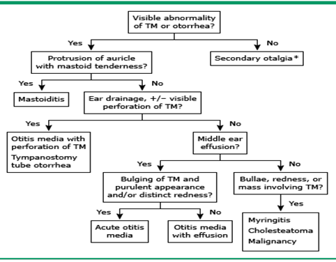

Ear pain
Executive summary
Introduction
Ear pain (or otalgia) ranks as one of the common complaints among adults and especially children evaluated in the primary care or emergency setting. Most patients will have one of three common diagnoses (acute otitis media, otitis externa, or otitis media with effusion) which are generally not dangerous. The rare cases of more severe disease associated with ear pain usually result from extension of the ear infection to adjacent anatomic structures (e.g. mastoiditis, meningitis, malignant otitis externa, venous sinus thrombosis). A basilar skull fracture or epidural hematoma after head trauma may also present with ear pain.
Target users
· Doctors
· Nurses
Target area of use
· Gate clinic
· Outpatient department
· Ward
Key areas of focus / New additions / Changes
This guideline outlines the differential diagnosis of ear pain and an approach to diagnosis. Management of common problems not addressed in other guidelines is briefly outlined.
Limitations
Problems requiring surgical input will need referral elsewhere.
Common causes of ear pain
The causes of ear pain can be categorised by the anatomic site from which the pain originates:
|
Auricle |
Diseases of the ear canal |
Diseases of the middle and inner ear |
|
Auricular haematoma or abrasions and lacerations – may suggest underlying basilar skull fracture Cellulitis Herpes zoster oticus |
Otitis externa Furuncle in ear canal Cerumen Impaction Foreign bodies |
Traumatic perforation of the TM (tympanic membrane) Acute otitis media Cholesteatoma |
Pain may also originate outside the ear, known as secondary otalgia. The referred pain arises from nerves that partially innervate the auricle or external auditory canal and include spinal nerves C2 and C3 and cranial nerves V, VII, IX, and X.
Two common examples include:
· Parotitis — Parotid gland disorders cause pain just inferior to the ear. On examination, swelling and tenderness of this region will be evident, occasionally with overlying redness.
· Temporomandibular joint (TMJ) dysfunction syndrome — Dysfunction of the temporal mandibular joint (TMJ) is common in children over 10 years of age.
Presenting symptoms and signs
· Fever: common in minor illnesses, such as uncomplicated otitis media and upper respiratory infection with associated otitis media with effusion
· Nasal congestion
· Ear discharge
· Decreased hearing
· Dysphagia, odynophagia and jaw pain especially in children
· Nausea, vomiting, focal neurologic complaints, or seizures, all of which may suggest intracranial injury
Examination findings
An attempt should be made to examine the ear, including otoscopy when necessary.
The findings will help you make a diagnosis as outlined below:

Investigations
In most routine cases of ear pain, laboratory investigations are not necessary, however, investigations may be appropriate in cases where more serious diagnoses are suspected. Some of which may include:
· FBC and ESR
· Bacterial or fungal culture of ear drainage: Reserved for patients with severe external otitis associated with periauricular cellulitis or fever.
· Blood culture – if bacteraemia is suspected.
· Lumbar puncture especially in children with signs of meningitis (A CT should be considered to exclude a brain abscess in such patients).
Management
Management will depend on the diagnosis made:
Otitis externa
· Topical - Ciprofloxacin 0.2% otic solution (alone or in combination with dexamethasone 0.1% otic suspension) 3-4 drops BD in adult and children for up to 3 days after cessation of symptoms.
The major components of managing external otitis include cleaning the ear canal, treating inflammation and infection, and pain control. To aid the absorption of antibiotics, a cotton wick may be placed in the affected ear after antibiotic application.
Otitis media
See separate guideline MeG-CLS-023.
Cerumen accumulation
Use cerumenolytic agents like Cerumol at two drops nocte for 5 days. Irrigation can be done if the above measure does not help.
Other problems originating in the ear including perforated TM and difficult to remove wax or foreign body will require referral to an ENT specialist.
Key Issues for Nursing care
· Refer all patients who do not respond to simple treatment as expected to the doctor.
· Patients with otitis externa should be advised on keeping ears dry. Patients should be advised not to use any objects (including cotton buds) to clean inside their ears.
· All cases of traumatic ear injury and foreign body in the ear should be referred to the doctor.
References
Ghanem T, Rasamny JK, Park SS. Rethinking auricular trauma. Laryngoscope 2005; 115:1251.
Kansu L, Yilmaz I. Herpes zoster oticus (Ramsay Hunt syndrome) in children: case report and literature review. Int J Pediatr Otorhinolaryngol 2012; 76:772.
Rosenfeld RM, Schwartz SR, Cannon CR, et al. Clinical practice guideline: acute otitis externa. Otolaryngol Head Neck Surg 2014; 150:S1.
Rubin J, Yu VL, Stool SE. Malignant external otitis in children. J Pediatr 1988; 113:965.
Lieberthal AS, Carroll AE, Chonmaitree T, et al. The diagnosis and management of acute otitis media. Pediatrics 2013; 131:e964.
Hydén D, Akerlind B, Peebo M. Inner ear and facial nerve complications of acute otitis media with focus on bacteriology and virology. . Acta Otolaryngol 2006; 126:460.
Wu JF, Jin Z, Yang JM, et al. Extracranial and intracranial complications of otitis media: 22-year clinical experience and analysis. Acta Otolaryngol 2012; 132:261.
Hafidh MA, Keogh I, Walsh RM, et al. Otogenic intracranial complications. a 7-year retrospective review. Am J Otolaryngol 2006; 27:390.
American Academy of Pediatrics Subcommittee on Management of Acute Otitis Media. Diagnosis and management of acute otitis media. Pediatrics. 2004 May;113(5):1451.
|
Written by: |
Name: Okpara Chibuike |
Date: 04 May 2019 |
|
Reviewed by: |
Name: Karen Forrest |
Date: 22 May 2019 |
|
Version: |
Change history: |
Review due date: |
|
1.0 |
New document |
31 May 2021 |
|
Review Comments (if applicable) |
|
|